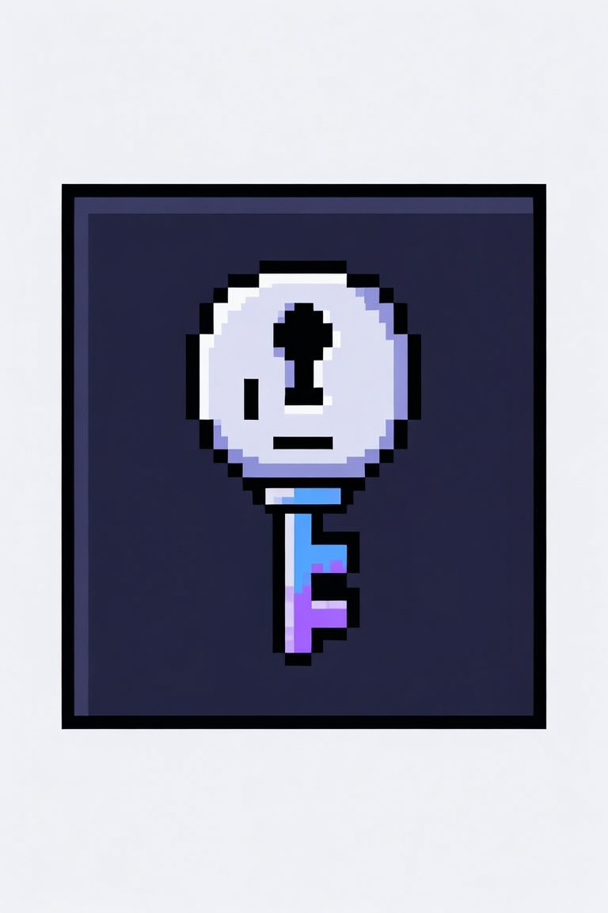

crackme-ptk
Crackmes & keygenmes — generate, build, publish via GitHub.
Type
all
crackme
keygenme
patchme
unpackme
OS
all
linux
windows
PE
all
PE32
PE32+
Language
all
c
cpp
asm
rust
go
python
Difficulty
all
1
2
3
4
5
Name
Type
OS
PE
Lang
Diff
Created
Loading catalog…